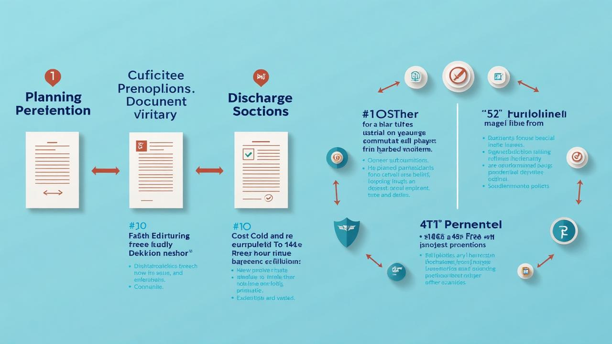

Planning Conditions — Discharge & Evidence (UK)
⚠️ Planning Condition Delays Cost Money
Non-compliance with planning conditions can halt your entire project. Don't risk enforcement action, stop notices, or being unable to occupy your completed development.
Get your planning conditions discharged right, first time. FIMSCO specialises in condition discharge across all UK planning authorities, providing the technical expertise and evidential support needed to secure approvals efficiently and cost-effectively.
Our multidisciplinary approach combines environmental science, engineering, and planning expertise to address the full spectrum of condition types — from straightforward material submissions through to complex environmental monitoring and verification programmes.

Planning Condition Discharge Services
Expert discharge of all planning condition types. Fast turnaround, competitive prices, 100% compliance record.
Understanding Planning Conditions — Definition and Legal Context
Planning conditions are legally binding requirements attached to planning permissions that must be satisfied either before development commences, during construction, or following completion. They serve to make otherwise unacceptable development acceptable by addressing potential impacts on amenity, environment, infrastructure, or community interests that cannot be adequately addressed through the submitted application alone.
The legal framework for imposing and enforcing planning conditions derives from the Town and Country Planning Act 1990, supported by guidance in the National Planning Policy Framework (NPPF) and Planning Practice Guidance. Local planning authorities must ensure conditions meet the six tests established in case law: necessary, relevant to planning, relevant to the development, enforceable, precise, and reasonable in all other respects.
What Are Planning Conditions and Why Are They Imposed?
Planning conditions enable local planning authorities to approve developments that might otherwise be refused, by requiring specific measures to mitigate potential adverse impacts. Common reasons for imposing conditions include protecting residential amenity, ensuring highway safety, preserving environmental quality, and securing appropriate design standards.
Conditions are typically imposed where planning officers or committee members identify specific concerns that can be addressed through additional information, detailed design, ongoing monitoring, or implementation of particular measures. The alternative to conditions is often application refusal, making condition acceptance usually beneficial to applicants despite the additional requirements.
Legal Framework — NPPF, Development Plan Policies
The National Planning Policy Framework provides high-level guidance on condition use, emphasising that conditions should only be imposed where necessary and should not be used to restrict national permitted development rights or duplicate other regulatory regimes. Development plan policies often specify standard conditions for particular development types or sensitive locations.
Local planning authorities maintain model condition libraries that provide standard wording for common requirements, though these are often modified to reflect site-specific circumstances. Understanding how national policy, local plan policies, and model conditions interact is essential for predicting likely condition requirements and developing appropriate discharge strategies.
Types of Conditions — Standard, Model, Bespoke
Standard conditions address routine requirements such as materials approval, landscaping details, or hours of construction, typically using established model wording that planning authorities apply consistently across similar developments. These conditions are generally straightforward to discharge as requirements and expectations are well-understood.
Bespoke conditions are drafted specifically for individual developments to address unique circumstances, potential impacts, or stakeholder concerns. These require careful interpretation and often benefit from pre-submission discussions with planning officers to clarify expectations and acceptable approaches to discharge.
Condition Precedent vs. Condition Subsequent
Pre-commencement conditions must be discharged before any development begins, creating potential programme risks if discharge is delayed. These typically relate to fundamental design issues, environmental protection measures, or infrastructure requirements that must be established before construction impacts occur.
Post-commencement conditions can be satisfied during or after construction, providing greater programme flexibility but requiring ongoing management to ensure compliance. Understanding the distinction is crucial for project programming and risk management, particularly for developments with multiple condition types and dependencies.